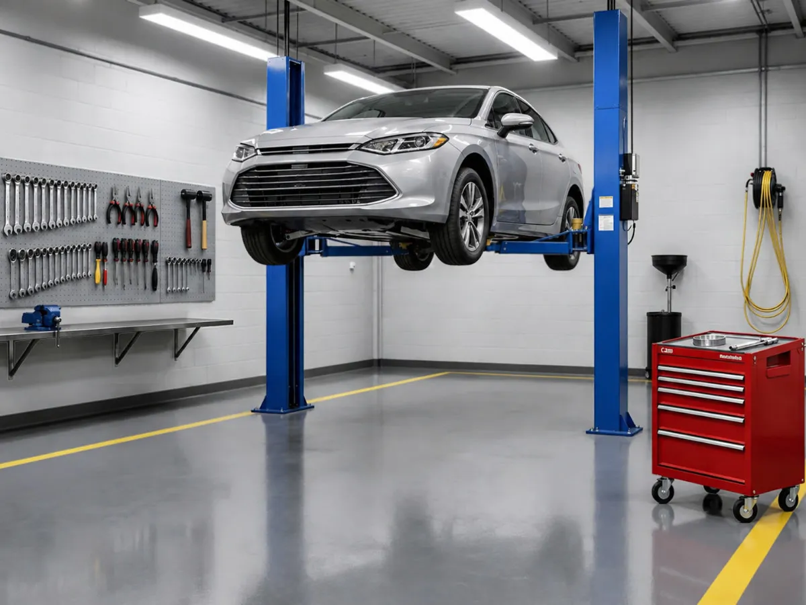

Garage in Nijmegen: APK en onderhoud bij een garage in jouw wijk
Bijgewerkt op 23 november 2026.
Een APK, een kleine beurt of een rare piep bij het remmen: dan wil je een garage die eerlijk is en niet te ver weg zit. Je hoeft daarvoor niet naar de dealer. Daarom zetten we per wijk de garages op een rij die alle merken doen.

Zo hebben we gekozen
We lazen in november 2026 de websites van de autobedrijven in onze bedrijvengids. In deze gids staan universele garages: ze doen APK en onderhoud voor alle merken. Dealers van één merk laten we weg, want daar ga je meestal alleen heen als je auto nog garantie heeft.
Centrum en Oost
Autobedrijf Starfit: al sinds 1980 in het centrum
Starfit zit aan de Pontanusstraat, vlak bij het Keizer Karelplein. Je komt er voor APK, kleine en grote beurten, banden en airco.
Een afspraak in de werkplaats maak je online. Handig: je loopt in een paar minuten naar het centrum terwijl je auto wordt gemaakt.
Goed voor: wie in of rond het centrum woont.
Autobedrijf Emile Wooninck: BOVAG-garage in Oost
Aan de Tooropstraat in Oost doet Emile Wooninck onderhoud, APK, reparaties, airco en banden voor elk merk personenauto. Ze spoelen ook automaatbakken.
De garage is lid van BOVAG en open van maandag tot en met vrijdag.
Goed voor: Oost en Altrade.
Nijmegen-West
Garage van Ottele: ook voor busjes en campers
Aan de Molenweg werken negen monteurs aan auto's, bedrijfsbusjes en campers van elk merk en elke leeftijd. Met twaalf bruggen is er bijna altijd plek.
Volgens de site zijn ze open over de kosten en geven ze eerlijk advies.
Goed voor: wie een camper of bestelbus heeft.
Auto Service Portaal: kenner van VW, Audi en Seat
Auto Service Portaal is een allround garage met ruim twintig jaar ervaring. Je kunt er terecht voor APK, onderhoud, reparaties en airco, en ook voor schade.
De monteurs doen alle merken, maar kennen de auto's van Volkswagen, Audi en Seat het best.
Goed voor: rijders van een Volkswagen, Audi of Seat.
Hatert en Dukenburg
Lammerts: familiebedrijf sinds 1950
Garage Lammerts zit al sinds 1950 aan de Hatertseweg. Het bedrijf is nu in handen van de derde generatie. Je komt er voor onderhoud, APK en occasions, en je kunt er ook tanken.
Op zaterdag is Lammerts open van tien tot vier.
Goed voor: wie op zaterdag langs wil.
Autobedrijf De Baaij: occasions en onderhoud
De Baaij aan de Aldenhof is een onafhankelijk BOVAG-bedrijf en hoort bij Bosch Car Service. Je kunt er een occasion kopen en je auto laten onderhouden, van elk merk.
Op een gekochte occasion krijg je zes maanden BOVAG-garantie.
Goed voor: wie een tweedehands auto zoekt met service erbij.
Lent en Oosterhout
Vakgarage Frank Pluym: met bandenshop
Aan de Griftdijk in Nijmegen-Noord doet Frank Pluym APK, kleine en grote beurten en airco-onderhoud. Je kunt er ook banden kopen en laten wisselen, en een trekhaak laten zetten.
De garage hoort bij Vakgarage. Je maakt online een afspraak.
Goed voor: bewoners van de Waalsprong.
Garage Hoogsteder: de dorpsgarage van Oosterhout
In de Dorpsstraat van Oosterhout zit Garage Hoogsteder. Het is een BOVAG-garage en een erkend APK-keuringsstation. Klanten geven de garage gemiddeld een 9,4.
Goed voor: wie van een vertrouwde dorpsgarage houdt.
Specialisten
Auto Berlina: alles voor je Alfa Romeo
Auto Berlina aan de Gorterplaats is al meer dan twintig jaar specialist in Alfa Romeo. Naast APK en beurten reviseren ze motoren en versnellingsbakken. Er staan ook Alfa's te koop.
Goed voor: Alfisti.
Bisselink & Gerrits: Land Rover-specialist
Aan de Hogelandseweg is Bisselink & Gerrits al twintig jaar specialist in Land Rover. Andere merken zijn ook welkom. Ze leveren ook Land Rover-onderdelen.
Goed voor: rijders van een Land Rover of Range Rover.
Clubsport: voor lastige storingen
Clubsport aan de Waterstraat lost storingen en defecten op waar andere garages op vastlopen. Daarnaast doen ze gewoon onderhoud aan alle merken, en tuning voor wie meer uit zijn auto wil halen.
Goed voor: een storingslampje dat niemand weg krijgt.
Ook goed
- KwikFit aan de Marialaan en de Gerard Noodtstraat, voor snel een APK of nieuwe banden.
- DVA Performance op Kerkenbos, voor chiptuning, onderhoud en APK.
- Autovakmeester Kuijpers aan de Berg en Dalseweg, richting Berg en Dal.
Op zoek naar tips voor je auto? Lees ook zo herken je slijtage aan je remschijven.
Veelgestelde vragen
Waar laat ik een APK doen in Nijmegen?
Elke garage in deze gids doet APK voor alle merken, bijvoorbeeld Starfit in het centrum, Emile Wooninck in Oost, Garage van Ottele in West en Lammerts in Hatert.
Moet ik voor onderhoud naar de dealer?
Nee. Ook als je auto nog garantie heeft, mag een universele garage het onderhoud doen, zolang die zich aan het onderhoudsschema van de fabrikant houdt. Bewaar wel de bonnen.
Welke garage in Nijmegen is open op zaterdag?
Garage Lammerts aan de Hatertseweg is op zaterdag open van tien tot vier.
Is er een garage voor campers in Nijmegen?
Ja, Garage van Ottele aan de Molenweg werkt ook aan campers en bedrijfsbusjes.